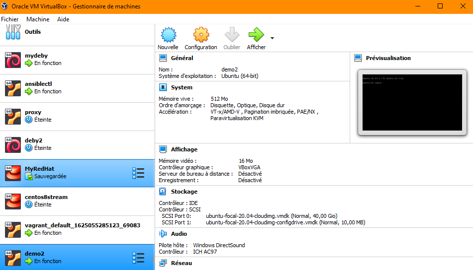

2021-06-24
Damien BERAUD Responsable du pôle système Tel: +33 761 049 539
Documentation Source en PDF:
Site officiel: https://www.ansible.com/overview/it-automation

Lien install officiel: https://www.vagrantup.com/
On vérifie l’installation avec les commandes:
vagrant init ubuntu/focal64Vagrantfile: https://www.vagrantup.com/docs/vagrantfile
https://app.vagrantup.com/boxes/search
vagrant up: Créer/démarrer les VMsvagrant halt: Arrêter les VMsvagrant reload: halt + upvagrant suspend: suspendre les traitements dans les VMsvagrant status: renvoie les informations de la VM dans le dossier courantAdmin stagiaire@BBG58Y2 MINGW64 ~/vagrant
$ vagrant status
Current machine states:
default running (virtualbox)
The VM is running. To stop this VM, you can run `vagrant halt` to
shut it down forcefully, or you can run `vagrant suspend` to simply
suspend the virtual machine. In either case, to restart it again,
simply run `vagrant up`.vagrant global-status: Renvoie les informations de toutes les VMs provisionnées et les identifiants.vagrant global-status
id name provider state directory
-------------------------------------------------------------------------------------
d9be6c2 default virtualbox running C:/Users/Admin stagiaire.DESKTOP-8967908/vagrant
The above shows information about all known Vagrant environments
on this machine. This data is cached and may not be completely
up-to-date (use "vagrant global-status --prune" to prune invalid
entries). To interact with any of the machines, you can go to that
directory and run Vagrant, or you can use the ID directly with
Vagrant commands from any directory. For example:
"vagrant destroy 1a2b3c4d"Permet de suspendre l’état de la machine.
Suspend
Command: vagrant suspend [name|id]
This suspends the guest machine Vagrant is managing, rather than fully shutting it down or destroying it.
A suspend effectively saves the exact point-in-time state of the machine, so that when you resume it later, it begins running immediately from that point, rather than doing a full boot.
This generally requires extra disk space to store all the contents of the RAM within your guest machine, but the machine no longer consumes the RAM of your host machine or CPU cycles while it is suspended. – https://www.vagrantup.com/docs/cli/suspend
vagrant suspend
Exemple:
Admin stagiaire@BBG58Y2 MINGW64 ~/vagrant
$ vagrant status
Current machine states:
default running (virtualbox)
The VM is running. To stop this VM, you can run `vagrant halt` to
shut it down forcefully, or you can run `vagrant suspend` to simply
suspend the virtual machine. In either case, to restart it again,
simply run `vagrant up`.
Admin stagiaire@BBG58Y2 MINGW64 ~/vagrant
$ vagrant global-status
id name provider state directory
-------------------------------------------------------------------------------------
d9be6c2 default virtualbox running C:/Users/Admin stagiaire.DESKTOP-8967908/vagrant
The above shows information about all known Vagrant environments
on this machine. This data is cached and may not be completely
up-to-date (use "vagrant global-status --prune" to prune invalid
entries). To interact with any of the machines, you can go to that
directory and run Vagrant, or you can use the ID directly with
Vagrant commands from any directory. For example:
"vagrant destroy 1a2b3c4d"
Admin stagiaire@BBG58Y2 MINGW64 ~/vagrant
$ vagrant status
Current machine states:
default running (virtualbox)
The VM is running. To stop this VM, you can run `vagrant halt` to
shut it down forcefully, or you can run `vagrant suspend` to simply
suspend the virtual machine. In either case, to restart it again,
simply run `vagrant up`.
Admin stagiaire@BBG58Y2 MINGW64 ~/vagrant
$ vagrant suspend
==> default: Saving VM state and suspending execution...
Admin stagiaire@BBG58Y2 MINGW64 ~/vagrant
$ vagrant resume
==> default: Resuming suspended VM...
==> default: Booting VM...
==> default: Waiting for machine to boot. This may take a few minutes...
default: SSH address: 127.0.0.1:2222
default: SSH username: vagrant
default: SSH auth method: private key
==> default: Machine booted and ready!
==> default: Machine already provisioned. Run `vagrant provision` or use the `--provision`
==> default: flag to force provisioning. Provisioners marked to run always will still run. Détruit totalement la VM
Admin stagiaire@BBG58Y2 MINGW64 ~/vagrant
$ vagrant ssh default
Welcome to Ubuntu 20.04.2 LTS (GNU/Linux 5.4.0-77-generic x86_64)
* Documentation: https://help.ubuntu.com
* Management: https://landscape.canonical.com
* Support: https://ubuntu.com/advantage
System information as of Wed Jun 30 12:23:02 UTC 2021
System load: 0.0 Processes: 110
Usage of /: 3.2% of 38.71GB Users logged in: 0
Memory usage: 19% IPv4 address for enp0s3: 10.0.2.15
Swap usage: 0%
1 update can be applied immediately.
To see these additional updates run: apt list --upgradablePour Windows il n’y aura pas de ssh, on utilisera les protocoles powershell et rdp.
vagrant powershellvagrant rdpDans le fichier vagrantfile:
Vagrant.configure("2") do |config|
config.vm.box = "ubuntu/focal64"
config.vm.hostname = "ubuntu-20.04"
config.vm.network :private_network, ip: "192.168.0.50"
endOn vérifie:
Admin stagiaire@BBG58Y2 MINGW64 ~/vagrant
$ vagrant ssh default
Welcome to Ubuntu 20.04.2 LTS (GNU/Linux 5.4.0-77-generic x86_64)
* Documentation: https://help.ubuntu.com
* Management: https://landscape.canonical.com
* Support: https://ubuntu.com/advantage
System information as of Wed Jun 30 13:27:38 UTC 2021
System load: 0.64 Processes: 118
Usage of /: 3.3% of 38.71GB Users logged in: 0
Memory usage: 18% IPv4 address for enp0s3: 10.0.2.15
Swap usage: 0% IPv4 address for enp0s8: 192.168.0.50
1 update can be applied immediately.
To see these additional updates run: apt list --upgradable
Last login: Wed Jun 30 12:23:03 2021 from 10.0.2.2Dans le fichier vagrantfile:
# -*- mode: ruby -*-
# vi: set ft=ruby :
Vagrant.configure("2") do |config|
config.vm.box = "ubuntu/focal64"
config.vm.hostname = "ubuntu-20.04"
config.vm.network :private_network, ip: "192.168.0.50"
# Les ressources
config.vm.define "demo2" do |vm|
vm.vm.provider "virtualbox" do |v|
v.memory = '512'
v.cpus = '1'
v.name = "demo2"
end
end
endPuis on relance les VMs: vagrant up

Pour assurer l’intégrité du fichier vagrantfile:
Vagrant.configure("2") do |config|
require 'yaml'
if File.file?('values.yaml')
conf = YAML.load_file('values.yaml')
else
raise "Configuration file 'values.yaml' does not exist"
end
config.vm.box = conf['box'] || "ubuntu/focal64"
config.vm.hostname = conf['hostname'] || "ubuntu-20.04"
config.vm.network :private_network, ip: "192.168.0.50"
if ARGV[1] and ARGV[1] != conf['name']
conf['name'] = ARGV[1]
end
# Les ressources
config.vm.define conf['name'] do |vm|
vm.vm.provider "virtualbox" do |v|
v.memory = conf['memory']
v.cpus = conf['cpus']
v.name = conf['name']
end
end
end Les lignes:
Nous permette de reprendre le contrôle sur les machines gérées précédemment et de les détruire, exemple:
vagrant destroy demo2
On renseigne les machines dans le fichier values.yaml:
---
box: 'ubuntu/focal64'
hostname: 'My-Ubuntu'
# name: 'demo5'
memory: '512'
cpus: '1'
machines:
- ['s1.formation.lan', '192.168.0.11', '512', '1']
- ['s2.formation.lan', '192.168.0.12', '512', '1']
- ['s3.formation.lan', '192.168.0.13', '512', '1']
...Puis dans vagrantfile:
Vagrant.configure("2") do |config|
# On charge le fichier de values.yaml
require 'yaml'
if File.file?('values.yaml')
conf = YAML.load_file('values.yaml')
else
raise "Configuration file 'values.yaml' does not exist"
end
config.vm.box = conf['box'] || "ubuntu/focal64"
if ARGV[1] and ARGV[1] != conf['name']
conf['name'] = ARGV[1]
end
# Les ressources
conf['machines'].each do |name, ip ,memory, cpus|
config.vm.define "#{name}" do |vm|
vm.vm.hostname = "#{name}"
vm.vm.network :private_network, ip: "#{ip}"
vm.vm.provider "virtualbox" do |v|
v.memory = conf['memory']
v.cpus = conf['cpus']
v.name = conf['name']
end
end
end
end On veut attribuer un OS différent pour chaque machines: s1, s2, s3.
https://app.vagrantup.com/boxes/search
Dans le fichier values.yaml:
---
name: 'demo5'
memory: '512'
cpus: '1'
machines:
- ['S1-Ubuntu', 's1.formation.lan', '192.168.0.11', '512', '1', 'ubuntu/focal64']
- ['S2-CentOS', 's2.formation.lan', '192.168.0.12', '512', '1', 'centos/8']
- ['S3-Arch', 's3.formation.lan', '192.168.0.13', '512', '1', 'archlinux/archlinux']
...Dans vagrantfile:
Vagrant.configure("2") do |config|
# On charge le fichier de values.yaml
require 'yaml'
if File.file?('values.yaml')
conf = YAML.load_file('values.yaml')
else
raise "Configuration file 'values.yaml' does not exist"
end
if ARGV[1]
conf['machines'] = [
[
ARGV[1],
ARGV[2],
ARGV[3] || '0.0.0.0',
ARGV[4] || '256',
ARGV[5] || '1',
ARGV[6] || 'ubuntu/focal64'
]
]
end
# Les ressources
conf['machines'].each do |name, hostname, ip ,memory, cpus, box|
config.vm.define "#{name}" do |vm|
vm.vm.hostname = "#{hostname}"
vm.vm.box = "#{box}" || "#{box_default}"
vm.vm.network :private_network, ip: "#{ip}"
vm.vm.provider "virtualbox" do |v|
v.memory = conf['memory']
v.cpus = conf['cpus']
v.name = conf['name']
end
end
end
end vagrant box list: Retourne une liste des boxes disponibles (téléchargées)Admin stagiaire@BBG58Y2 MINGW64 ~/GitHub/Documentations/KnowledgeBase/2021-06-30-POEI-Vagrant-Packer/vagrant (main)
$ vagrant box list
archlinux/archlinux (virtualbox, 20210619.26314)
centos/7 (virtualbox, 2004.01)
ubuntu/focal64 (virtualbox, 20210624.0.0)vagrant box outdated: Vérifie si il existe des mises à jours disponibles.$ vagrant box outdated
Checking if box 'ubuntu/focal64' version '20210624.0.0' is up to date...
Checking if box 'centos/7' version '2004.01' is up to date...
Checking if box 'archlinux/archlinux' version '20210619.26314' is up to date...vagrant box outdated --global: Vérifie si il existe des mises à jours disponibles au niveau global.$ vagrant box outdated --global
* 'ubuntu/focal64' for 'virtualbox' (v20210624.0.0) is up to date
* 'centos/7' for 'virtualbox' (v2004.01) is up to date
* 'archlinux/archlinux' for 'virtualbox' (v20210619.26314) is up to datevagrant box update --box nom_de_la_box: Met à jour la box nommée.vagrant box update: Met à jour l’ensemble des boxes.$ vagrant box update
==> s1.formation.lan: Checking for updates to 'ubuntu/focal64'
s1.formation.lan: Latest installed version: 20210624.0.0
s1.formation.lan: Version constraints:
s1.formation.lan: Provider: virtualbox
==> s1.formation.lan: Box 'ubuntu/focal64' (v20210624.0.0) is running the latest version.
==> s2.formation.lan: Checking for updates to 'centos/7'
s2.formation.lan: Latest installed version: 2004.01
s2.formation.lan: Version constraints:
s2.formation.lan: Provider: virtualbox
==> s2.formation.lan: Box 'centos/7' (v2004.01) is running the latest version.
==> s3.formation.lan: Checking for updates to 'archlinux/archlinux'
s3.formation.lan: Latest installed version: 20210619.26314
s3.formation.lan: Version constraints:
s3.formation.lan: Provider: virtualbox
==> s3.formation.lan: Box 'archlinux/archlinux' (v20210619.26314) is running the latest version.vagrant box pruneOn supprime une/des boxe(s) avec: vagrant box remove
Doc officielle: https://www.vagrantup.com/docs/cli/snapshot
Options de la commande vagrant snapshot:
vagrant snapshot push: Prend un snapshot et le “pousse” vers le “snapshot stack”.
vagrant snapshot pop:
vagrant snapshot save:
vagrant snapshot restore:
vagrant snapshot list:
vagrant snapshot delete: